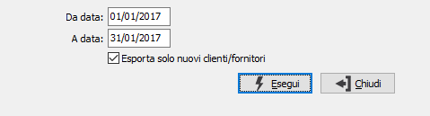

Esportazione dati
La procedura consente di esportare verso la procedura di contabilità studio Factotum Evolution di ItalStudio versione 3.8;
E' possibile esportare, in base ai parametri dalla configurazione Integrazione Factotum:
Movimenti contabili: se l’azienda internamente gestisce anche la contabilità e quindi contabilizza i documenti (di vendita e/o di acquisto) i movimenti possono essere esportati direttamente dalla prima nota contabile (quindi le fatture attive e passive verranno trattate solo se contabilizzate).
Fatture ciclo attivo: in questo caso l’azienda non gestisce la contabilità ma emette solo le fatture di vendita e quindi vengono inviati i dati direttamente dai documenti del ciclo attivo.
Fatture ciclo passivo: in questo caso l’azienda non gestisce la contabilità ma registra dal ciclo passivo le fatture di acquisto e quindi vengono inviati i dati direttamente dai documenti del ciclo passivo.
Come limiti di elaborazione sono richieste le date riferite ai movimenti e/o ai documenti in base a quali dati sono configurati per l'esportazione.
Apponendo la spunta sulla casella "Esporta solo nuovi clienti/fornitori" viene fatto un controllo per evitare di esportare nuovamente codici già inviati con precedenti esportazioni.
I files vengono generati nella cartella prevista in configurazione.
